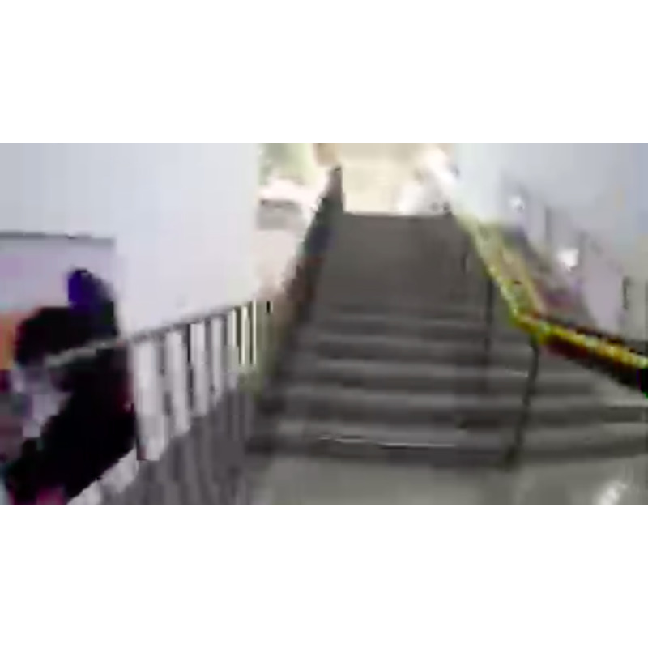

1 of 4
2 of 4

3 of 4
4 of 4

Calen Bennett is a conceptual artist working at the crux between moving image, participation, installation and performance. With Progressive Runs Through the Virtual Now (2017), the artist invites visitors to enter into an interstitial temporal space in the gallery and watch a live-streaming audio-visual projection of the artist as he runs, both starting and ending in the gallery space facing the work. Using the experiential narrative of running, Bennett creates a critical art encounter that aims to turn the viewer into a more conscious and mindful agent in the completion of the work. Through this continual exploration, the artist seeks to conquer preconceived systematic notions as they relate to our shared human experience.